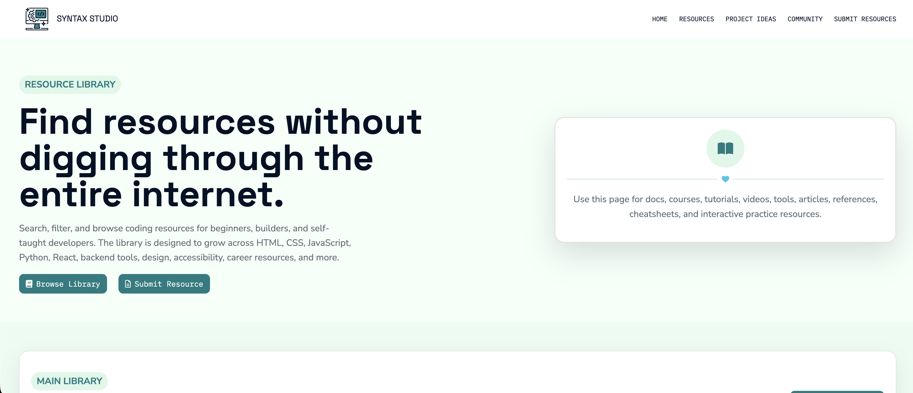
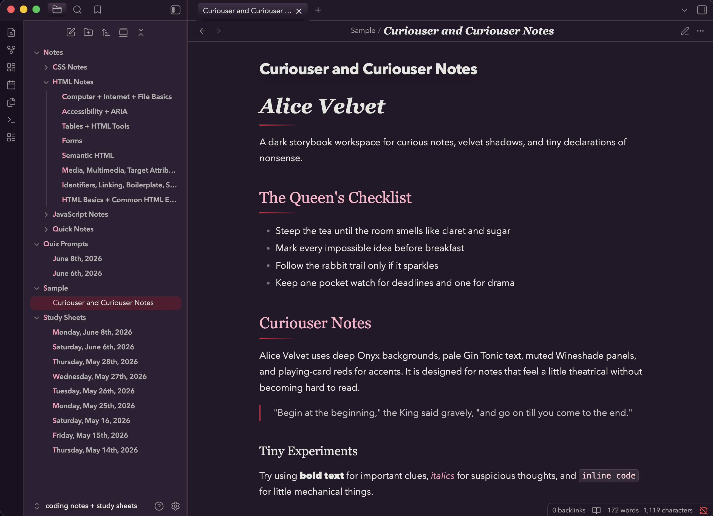

Study Command Center
Project Archive
Case studies, experiments, and visual systems.
This page collects the projects behind the portfolio: what I built, what I practiced, what I learned, and what I would improve next.
Myth & Mana
Syntax Studio Resource Library
Alice Velvet
Selected Work
Projects with visual identity and intention.

Semantic HTML
Resource/Card Organization
Responsive UI
Community-focused Content Design
Syntax Studio Resource Library
A personal dashboard concept for organizing progress, study goals, resources, and learning routines with a calm visual system.

Myth & Mana Screenshot
CSS Grid Layout
Editorial-style Visual Hierarchy
Visual Storytelling
Responsive Feature/Card Sections
Myth & Mana
A fantasy-inspired editorial concept using mood, layout, and decorative hierarchy to create a stronger visual experience.

Project Goal
The main goal of this project was to create a personal learning dashbooard, which will track and display my current learning progress on a weekly basis in a clear, organized, visual way.
Tools Used
- HTML5
- CSS3
- Responsive Design
- GitHub Pages
- Visual Studio Code
- Chrome DevTools
What I Built
A personal learning dashboard to organize my coding progress, study goals, and completed topics.
What I Learned
Through this project, I learned how to structure a multi-section webpage with HTML, how to use CSS to create cards, spacing, colors, and a clean visual layout, as well as how to turn personal learning goals into a polished portfolio project.
Next Improvements
Future improvements for this project include adding JavaScript to make the dashboard interactive and easier to update, improving the accessibility of the content and interactions, and refining the visual design with more intentional typography, color, and spacing choices.
Project Goal
The main goal of this project was to create a fantasy-inspired editorial concept using mood, layout, and decorative hierarchy to create a stronger visual experience.
Tools Used
- CSS Grid Layout
- Editorial-style Visual Hierarchy
- Visual Storytelling
- Responsive Feature/Card Sections
What I Built
The page features a main hero section that sets the tone for the fantasy theme. It also includes a featured content section, editorial/grid section, and visual/content cards, each of which presents a different magical topic, creature, place, spell, or fantasy concept.
What I Learned
This project taught me how to use CSS Grid effectively and create a more dynamic editorial layour instead of a simple stacked page. I learned how larger and smaller content cards can work togeher to guide the viewer's eye and make certain sections feel more important.
Next Improvements
Future improvements will focus on refining the project's responsiveness, improving spacing across different screen sizes, and making the editorial's layout feel even more polished on mobile devices.
Project Goal
The main goal of the Syntax Studio Resource Library project was to create a beginner-friendly coding resource hub that makes it easier for self-taugh learners to find helpful tools, guides, and project ideas in one organized place.
Tools Used
- Semantic HTML
- Resource/Card Organization
- Responsive UI
- Community-focused Content Design
What I Built
The page features a responsive coding resource library for beginner and self-taught developers. The site includes organized resource sections, project prompt areas, community-focused content, and clear navigation to help users find learning materials more easily.
What I Learned
Through this project, I learned how to organize a larger amount of information into clear sections so users can browse resources without feeling overwhelmed. I practiced building responsive layouts, creating usable card styles, improving visual hierarchy, and designing a site around a real community purpose. I also used JavaScript to make the resource library searchable, which helped me practice adding interactive functionality and making the site more useful for visitors.
Next Improvements
In the future, I would continue adding more coding resources, project prompts, and beginner-friendly learning materials so the library becomes more useful over time. I would also improve the search and filtering features, add more resource categories, refine the mobile layout, and make the submission process clearer for people who want to recommend helpful resources.

Project Goal
The main goal of Alice Velvet was to create a custom Obsidian theme that made note-taking, studying, and writing feel more personal, polished, and visually inspiring.
Tools Used
- CSS Styling & Variables
- UI Customization
- Color Palette Design
- Typography Selection
- Visual Hierarchy
What I Built
I built a custom Obsidian theme called Alice Velvet that changes the look and feel of the entire note-taking workspace. The theme includes a personalized color palette, styled sidebars, readable editor areas, polished headings, and customized panels. Alice Velvet is a custom Obsidian theme that reached nearly 400 downloads in its first week with no existing community following.
What I Learned
Through Alice Velvet, I learned how to customize an existing application interface with CSS and work within Obsidian’s theme structure. I practiced using CSS variables, refining colors and typography, adjusting spacing, and creating a consistent visual system across different parts of the workspace. I also learned how small interface details can affect readability, mood, and the overall writing experience.
Next Improvements
In the future, I would continue refining Alice Velvet by improving mobile support, polishing more Obsidian interface states, and testing the theme across different note types. I would also add more styling for callouts, code blocks, tables, tags, and plugins so the theme feels even more complete and consistent throughout the workspace.